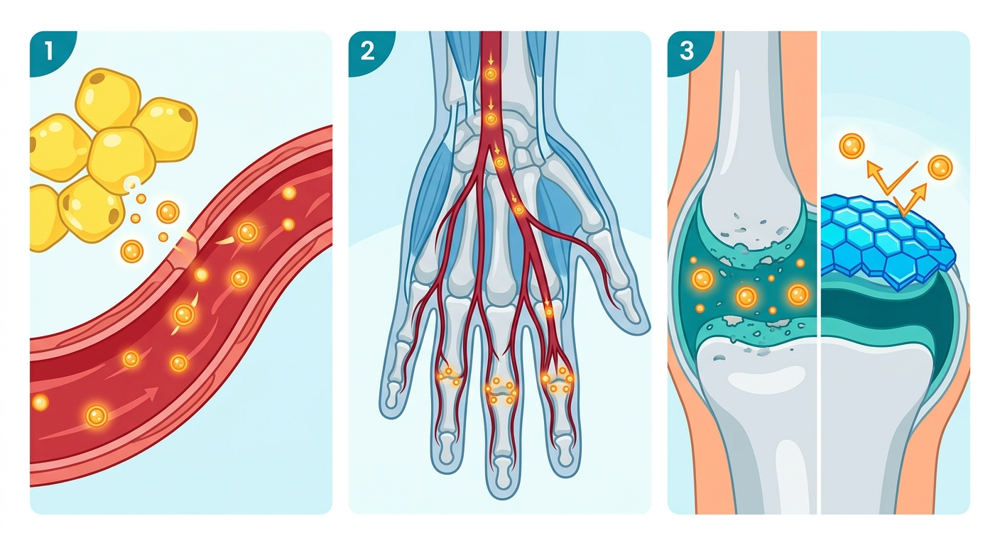

Beyond Wear and Tear: How Fat Cells Send 'Trojan Horses' That Decay Our Joints—and the Biotech Frontiers Fighting Back

For generations, the medical consensus on osteoarthritis was a simple lesson in physics. We treated our joints like the shock absorbers of a car: carry too much weight for too long, and the cartilage inevitably grinds down. It was a disease of gravity, mass, and time.
But this mechanical narrative has always harbored a glaring paradox. If osteoarthritis is purely about physical wear and tear, why do people with obesity frequently suffer from severe joint degeneration in their fingers and wrists? Cartilage doesn’t carry weight there. Yet, the hands of patients carrying excess adipose tissue often tell the same painful story as their knees.
A groundbreaking study published in Science Advances has finally solved this biological mystery, revealing a cellular conspiracy that rewrites our understanding of joint decay. The culprit isn’t just gravity; it is a toxic form of biological communication. Our fat cells are actively broadcasting "Trojan horses" through the bloodstream—cellular packages that trick cartilage into destroying itself. For the longevity and biotech sectors, this discovery doesn’t just explain a disease; it opens up a multi-billion-dollar therapeutic frontier targeting a newly uncovered pathway of cellular senescence.
The Molecular Trojan Horse
To understand this destructive communication, we have to look at extracellular vesicles (EVs)—tiny, membrane-bound bubbles that cells use to send molecular messages across the body. Under healthy conditions, these vesicles are routine cargo ships. But in the context of high body fat, the adipose tissue begins exporting a highly specialized, pathologic variant: EV-Mito.
These specific vesicles are packed with mitochondrial components, most notably mitochondrial DNA (mtDNA). Normally, mitochondria are the powerhouses of our cells, and their DNA is kept safely locked away inside. But when fat cells pack mtDNA into EVs and send them into the circulation, they become cellular weapons.
As these EV-Mito packages travel through the body, they are absorbed by chondrocytes—the specialized cells responsible for maintaining healthy, springy joint cartilage. Once inside the chondrocyte, the cargo is released. And that is where the cellular chaos begins.
An Ancient Alarm System Gone Awry
Our cells are wired with ancient defense mechanisms designed to detect viral and bacterial invaders. One of the most critical of these is the cGAS-STING pathway. This pathway acts as a burglar alarm, constantly scanning the cell’s cytoplasm for foreign DNA—a surefire sign of an infection.
When the adipose-derived EV-Mito dumps its payload of mtDNA directly into the cytoplasm of a cartilage cell, the cGAS-STING alarm sounds. The cell doesn’t realize this DNA is harmless host material; it mistakes the mtDNA for a hostile viral invasion.
The consequences of this false alarm are catastrophic for the joint. Rather than performing routine maintenance on the cartilage matrix, the panicked chondrocyte enters a state of high-alert inflammation. It undergoes metabolic dysfunction and eventually slips into cellular senescence—permanently halting replication and transforming into a toxic "zombie cell." These senescent chondrocytes begin secreting destructive enzymes and inflammatory proteins, actively eating away at the surrounding cartilage. The joint doesn’t just wear out; it is actively dismantled from the inside.
Silencing the Signal
The beauty of uncovering this EV-Mito-mtDNA-cGAS-STING axis is that it transforms osteoarthritis from an inevitable consequence of aging and weight into a treatable metabolic disease.
In murine and human tissue models, the researchers demonstrated that blocking this pathway—either by genetically knocking out the cGAS-STING system or using targeted pharmacological inhibitors—prevented cartilage decay, reduced pain behaviors, and restored normal gait. By cutting the phone lines between fat and cartilage, they kept the joints healthy, even in the presence of metabolic stress.
But the translation to human health goes even deeper. The researchers analyzed clinical data and found that a person’s body fat percentage—not their Body Mass Index (BMI)—was the true driver of osteoarthritis risk. A person can have a high BMI due to muscle mass and have healthy joints, but high body fat percentage directly correlates with joint decay because of this toxic signaling.
Excitingly, the study also tracked a human cohort undergoing High-Intensity Interval Training (HIIT). They found that targeted exercise selectively reduced adiposity, which directly led to a significant drop in the abundance of mtDNA within joint-adjacent vesicles. Consequently, inflammatory signaling markers inside the joint fluid plummeted, and patients reported major improvements in their osteoarthritis symptoms.
A Goldmine for Longevity Biotech
For longevity investors and drug developers, this paper is a roadmap to an entirely new class of therapeutics. Osteoarthritis affects over 325 million people globally, representing a staggering market with zero approved disease-modifying drugs.
By defining this precise molecular axis, the study highlights several immediate, highly translatable drug targets:
- cGAS-STING Inhibitors: Small molecules that block this pathway could silence the false viral alarm inside joint cartilage, preventing senescence and preserving joint architecture.
- EV-Targeted Therapies: Therapeutics designed to intercept, neutralize, or filter out adipose-derived EV-Mitos before they reach the joints could halt the disease before it starts.
- Senolytics: Clearing the senescent "zombie" chondrocytes generated by this pathway could allow the joint to regenerate naturally.
Osteoarthritis is no longer just a disease of heavy loads and bad luck. It is a disease of misdirected cellular communication—and for the first time, we know exactly how to mute the call.
Sources & Citations:
Primary Source: Adipose-cartilage communication via EV-Mito-mtDNA signaling promotes osteoarthritis progression. (Science advances)
- Zhao, Y., et al. (2024). Adipose-cartilage communication via EV-Mito-mtDNA signaling promotes osteoarthritis progression. Science Advances, 10(21), eaee6780. https://doi.org/10.1126/sciadv.aee6780